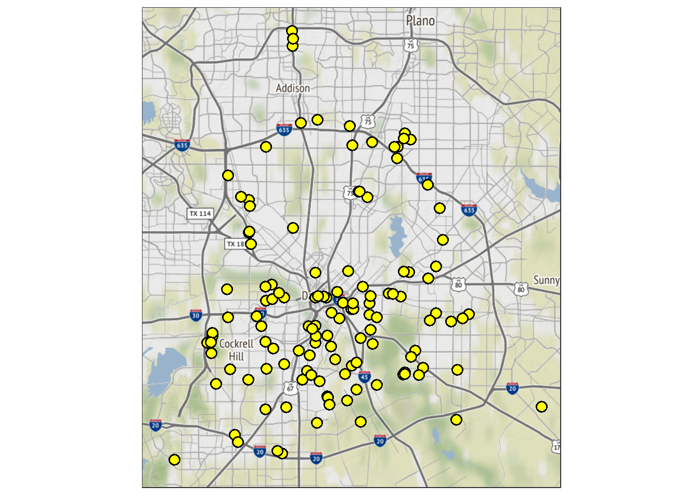

To explore the Dallas Murder data more yourself, check out my Shiny app here: https://sean-conroy.shinyapps.io/shinymurdermap/
All Dallas Murders since 2014, Color by Year
Let’s take a look at the Dallas murders on a map for each year.
Let’s take a look at the murders just for 2020.

Cluster analysis: what are the centers of the murder areas? Let’s try K-means with 10 clusters.

Animate the murders by year.

Package “ggmap” citation: D. Kahle and H. Wickham. ggmap: Spatial Visualization with ggplot2. The R Journal, 5(1), 144-161. URL http://journal.r-project.org/archive/2013-1/kahle-wickham.pdf